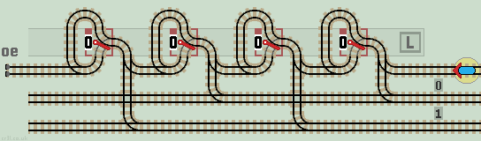
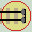
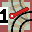

Equivalent Circuits
In electronics, different types of logic gate can be constructed using just one type of gate -usually NAND gates. In a similar manner, we can use lazy points to build sprung points, flip-flops and cross-overs.
We cannot use sprung points to build a lazy point as sprung points leave a circuit unchanged, whereas lazy points change the state of a circuit.
This also allows the construction of inverted and bypassed lazy points.
Sprung PointA sprung point can be built from two lazy points linked together. The points must start in the 0 position, else the train could leave the track. They do not need to be reset as the train cannot leave the points in the 1 position. The circuit shown is the equivalent of a sprung point in this orientation:
This allows the 'old' style of Duplo points to be built from two 'new' Duplo points linked together. |
|
Flip-flop
A flip-flop can be built from three lazy points linked together. For convenience, the central lazy point is drawn reflected. The points can be drawn more compactly without the short vertical track between lazy points. See Flip-flop functions. Trains are not allowed to arrive on an output line, as they could fall off the track. If necessary, the circuit could be modified to prevent this by joining the two open branch lines:
|
|

Distributor
In their paper Train Sets, Chalcraft and Greene describe a flip-flop circuit, which they name a 'Distributor'. Their Turing machine uses only unlinked (single) lazy points, so cannot include the flip-flop circuit with three linked lazy points shown above. Instead, their distributor function sends the train to an additional stage each time it is used. In theory, it needs to be infinite in size.
| 


|
| Click layout to pause/run train | Click start circle to reset train |
The distributor is similar to a Sequential Latch. Instead of returning back along the same track, the train is returned on alternate tracks 0 and 1. The circuit is extended to the left as necessay.
All lazy points are reset to 0 before use (unlike the Chalcraft Greene design where they are reset to alternate 0 and 1's). The cross-overs can be eliminated by placing the lower return track above the latches.
Flip-flop 2A flip-flop can also be built from two lazy points linked together and a single sprung point. This is the layout used in many of these pages. The sprung point needs to be replaced with an equivalent lazy point layout. Therefore each flip-flop requires four lazy points. This is one more than the first flip-flop, but the circuit has the advantage that trains cannot leave the track if they arrive on one of the output lines. |
|


|
| Click layout to pause/run train | Click start circle to reset train |
Lazy Point Cross-overTwo lazy points, linked together can emulate a cross-over. The circuit shown is equivalent to a single cross-over:
Trains arriving on one side are routed to the opposite side, so connecting N-S vertically and E-W horizontally. The outer track with its 4 lazy points allows the central cross-over circuit to be tested. |
|

| Click layout to pause/run train | Click start circle to reset train |
Sprung Point Cross-overs
We can also construct cross-overs from sprung points. Each of these designs require 12 sprung points. Trains arriving on one side are routed to the opposite side, so connecting N-S vertically and E-W horizontally.
|
|

| Click layout to pause/run train | Click start circle to reset train |